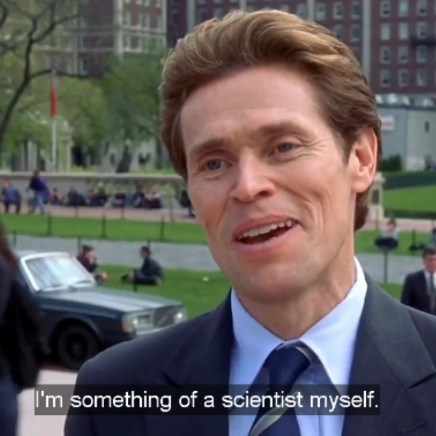
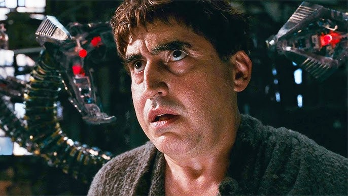

Na Oscorp Industries, nossa missão é moldar o amanhã através da ciência de ponta e
da engenharia biotecnológica. Fundada para romper os limites do potencial humano, lideramos o
desenvolvimento de soluções globais que vão da genética avançada à energia sustentável. Assim como
os maiores gigantes de tecnologia do mundo, nós não apenas antecipamos o futuro
— nós o construímos, transformando teorias ousadas nas tecnologias que o mundo precisará
amanhã.
Pesquisa avançada em modificação genética, terapias gênicas e desenvolvimento de organismos de alto desempenho para uso médico e industrial.
Reatores de fusão em miniatura, células de hidrogênio de próxima geração e sistemas de armazenamento de energia que superam as baterias convencionais em 400%.
Interface homem-máquina, próteses neuroligadas e exoesqueletos que ampliam as capacidades humanas para além dos limites biológicos.
As mentes por trás do amanhã.

Visionário e cientista, Norman construiu a Oscorp do zero. Seu compromisso com a inovação sem limites moldou o DNA da empresa.
Na Biocen Corp, acreditamos que os limites do corpo humano são apenas o ponto de partida para a próxima grande descoberta. É com imenso orgulho que apresentamos o líder da nossa divisão de Pesquisa de Ponta e Bioengenharia: o renomado Dr. Curtis "Curt" Connors.

nós não prevemos o futuro — nós o construímos. Combinando engenharia de precisão, inteligência artificial e física avançada, nossa missão é estender os limites da capacidade humana. É com grande entusiasmo que apresentamos o fundador e Diretor Científico da nossa companhia: o visionário Dr. Otto Octavius.